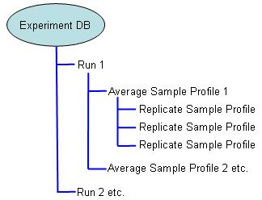

The Experiment Database stores sample profiles grouped into their respective Runs:

The data is organized into a tree-like structure, which provides a convenient method for viewing and editing of data. This also introduces the concept of an average profile, which is used to increase read precision. Note that the average and replicate profiles are edited independently, so that for example, changes to the LRE analysis of a replicate profile will not change analysis of the average profile. However, as described in the Experiment Database Window overview, replicate profiles can be excluded from the analysis, which triggers the corresponding average profile to be recalculated using the remaining replicate profiles.